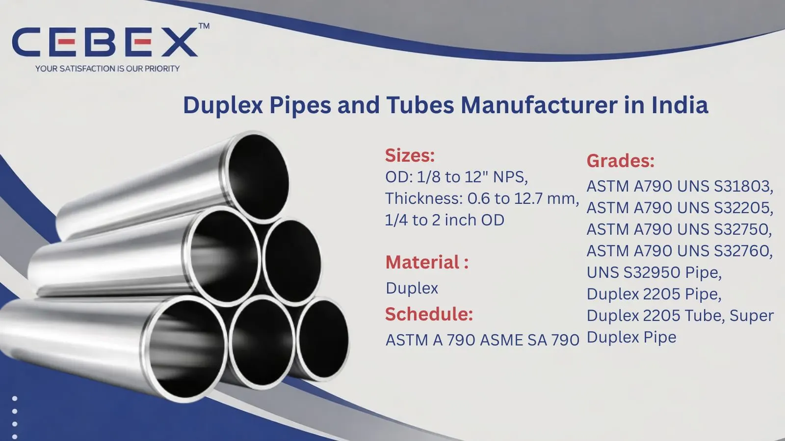

Leading Manufacturer & Exporter of Duplex 2205, Super Duplex Pipes
In today's demanding industrial environments, the strength, corrosion resistance, and reliability of piping systems are critical to project success. As a leading Duplex Stainless Steel Pipes Manufacturer in India, CEBEX STEEL INDIA delivers high-performance duplex pipes engineered for superior durability in aggressive and high-pressure applications across domestic and global markets.
Duplex Stainless Steel Pipes combine the benefits of austenitic and ferritic stainless steels, offering higher strength, excellent resistance to stress corrosion cracking, and superior performance in chloride-rich environments. These pipes are widely used in oil & gas, petrochemical, offshore, marine, desalination, and chemical processing industries.
Our manufacturing capabilities include seamless, welded, ERW, and EFW Duplex Stainless Steel Pipes produced using advanced technology and strict quality control systems. Each pipe is designed for dimensional accuracy, high mechanical strength, and long service life under extreme operating conditions.

Selecting a reliable Duplex Stainless Steel Pipes Manufacturer in India is essential to ensure safety, performance, and long-term operational efficiency. CEBEX STEEL INDIA is known for its advanced manufacturing infrastructure, technical expertise, and adherence to international quality standards.
We manufacture Duplex Stainless Steel Pipes in accordance with ASTM A790 and related ASME standards, ensuring suitability for high-pressure and corrosive environments. Each pipe undergoes rigorous testing, including PMI, hydrostatic testing, ultrasonic testing, and mechanical testing to guarantee material integrity and performance.
Our facility maintains full traceability from raw material to finished Duplex Stainless Steel Pipes using heat numbers and batch records. All products are supplied with EN 10204 3.1 / 3.2 Mill Test Certificates along with inspection and compliance documentation.
With strong export capabilities, we ensure safe packaging, timely delivery, and complete documentation for shipments to Africa, the Middle East, Europe, and Southeast Asia.
| Feature | Specification / Detail |
|---|---|
| Product Type | Duplex Stainless Steel Pipes |
| Specification | ASTM A790 (Seamless & Welded) |
| Duplex Grades | UNS S31803, UNS S32205, UNS S32750 |
| Types | Seamless, Welded, ERW, EFW |
| Size Range | –" NB to 24" NB |
| Schedules | SCH 5 to SCH XXS |
| Standards | ASME B36.10, ASME B36.19 |
These Duplex Stainless Steel Pipes are designed to deliver high strength, excellent corrosion resistance, and long-term reliability in aggressive industrial environments.
Our product range includes seamless Duplex Stainless Steel Pipes for high-pressure and high-temperature applications, along with welded pipes such as ERW and EFW for large diameter and structural uses. Seamless pipes provide superior strength due to their homogeneous structure, while welded pipes offer cost-effective solutions for large-scale industrial projects.
We also manufacture customized Duplex Stainless Steel Pipes with specific wall thicknesses, dimensional tolerances, and surface finishes as per project requirements, ensuring full compliance with engineering specifications.
Material selection is critical for pipe performance in corrosive and high-pressure environments. We offer Duplex Stainless Steel Pipes in various grades compliant with international standards:
| Grade | Common Name | Typical Applications |
|---|---|---|
| UNS S31803 / S32205 | Duplex 2205 Pipe | Oil & gas, chemical processing, marine |
| UNS S32750 | Super Duplex 2507 Pipe | Offshore, seawater systems, desalination |
| UNS S32760 | Super Duplex | High chloride and aggressive environments |
| UNS S32950 | Duplex Alloy | Industrial piping and heat exchangers |
| Category | Standards |
|---|---|
| Pipe Standards | ASTM A790 |
| ASME Standards | ASME SA790 |
| Dimensional Standards | ASME B36.10, B36.19 |
| International Standards | DIN, EN, ISO |
| Grade | C Max | Mn Max | Si Max | P Max | S Max | Cr (%) | Ni (%) | Mo (%) | N (%) |
|---|---|---|---|---|---|---|---|---|---|
| UNS S31803 | 0.03 | 2.00 | 1.00 | 0.030 | 0.020 | 21.0–23.0 | 4.5–6.5 | 2.5–3.5 | 0.08–0.20 |
| UNS S32205 | 0.03 | 2.00 | 1.00 | 0.030 | 0.020 | 22.0–23.0 | 4.5–6.5 | 3.0–3.5 | 0.14–0.20 |
| UNS S32750 | 0.03 | 1.20 | 0.80 | 0.035 | 0.020 | 24.0–26.0 | 6.0–8.0 | 3.0–5.0 | 0.24–0.32 |
| UNS S32760 | 0.03 | 1.00 | 1.00 | 0.030 | 0.010 | 24.0–26.0 | 6.0–8.0 | 3.0–4.0 | 0.20–0.30 |
| UNS S32950 | 0.03 | 1.50 | 1.00 | 0.040 | 0.030 | 26.0–29.0 | 4.0–6.0 | 1.0–2.0 | – |
| Grade | Tensile Strength (MPa) | Yield Strength (MPa) | Elongation (%) | Hardness (HB) |
|---|---|---|---|---|
| S31803 | 620 | 450 | 25 | 293 |
| S32205 | 620 | 450 | 25 | 293 |
| S32750 | 800 | 550 | 15 | 310 |
| S32760 | 750 | 550 | 25 | 300 |
| S32950 | 620 | 485 | 20 | 290 |
We manufacture Duplex Stainless Steel Pipes in a wide range of dimensions, from –" NB to 24" NB, with wall thicknesses from SCH 5 to XXS and custom schedules. Our production is fully compliant with ASME B36.19, ASME B36.10, EN, DIN, and other international standards. The following table illustrates typical dimensions for pipes as per ASME B36.19:
| Size (NB) | OD (mm) | Thickness (mm) | Weight (kg/m) |
|---|---|---|---|
| –" | 21.3 | 2.77 | 1.27 |
| 1" | 33.4 | 3.38 | 2.68 |
| 2" | 60.3 | 3.91 | 5.44 |
| 4" | 114.3 | 6.02 | 15.32 |
| 8" | 219.1 | 8.18 | 43.39 |
Custom sizes and schedules are available as per project requirements.
Duplex Stainless Steel Pipes are widely used in industries where high strength and corrosion resistance are essential, including oil & gas, petrochemical, offshore platforms, desalination plants, marine systems, and chemical processing industries.
Their superior resistance to stress corrosion cracking and pitting makes them ideal for chloride-rich and aggressive environments.
All Duplex Stainless Steel Pipes undergo stringent quality checks including PMI testing, hydrostatic testing, ultrasonic testing, and full mechanical testing.
Each pipe is supplied with EN 10204 3.1 / 3.2 Mill Test Certificates, ensuring complete traceability, compliance, and quality assurance.
Duplex Stainless Steel Pipes are packed in export-grade wooden cases, bundles, and protective wrapping to prevent damage during transit. Each pipe is properly marked with grade, size, standard, and heat number.
We provide complete export documentation including invoices, packing lists, and certificates to ensure smooth global delivery.
As a leading Duplex Stainless Steel Pipes Manufacturer in India, we supply high-quality pipes to major projects across Africa. Our export team ensures smooth logistics, timely delivery, and full compliance with international standards.
Our Duplex Stainless Steel Pipes are widely used in oil & gas, infrastructure, and power projects across Nigeria, Egypt, Kenya, South Africa, and other regions.
In addition to Duplex Stainless Steel Pipes, we also manufacture and export Super Duplex Pipes, Stainless Steel Pipes, Inconel Pipes, and Hastelloy Pipes. These alloy pipes are engineered for extreme environments where superior corrosion resistance, high strength, and temperature stability are essential.
Browse our full range:
CEBEX STEEL INDIA is known for delivering consistent quality, technical expertise, and reliable export services. We provide competitive pricing, strict quality control, and dependable delivery, making us a trusted partner for industrial piping solutions.
Our pipes comply with ASTM A790, ASME SA790, and international standards such as DIN and EN.
Yes, all pipes are supplied with EN 10204 3.1 / 3.2 Mill Test Certificates.
Standard sizes are available ex-stock, while custom orders are delivered within 2–4 weeks.
Yes, we manufacture Duplex Stainless Steel Pipes as per drawings and specifications.
All pipes undergo strict inspection, testing, and full traceability documentation.